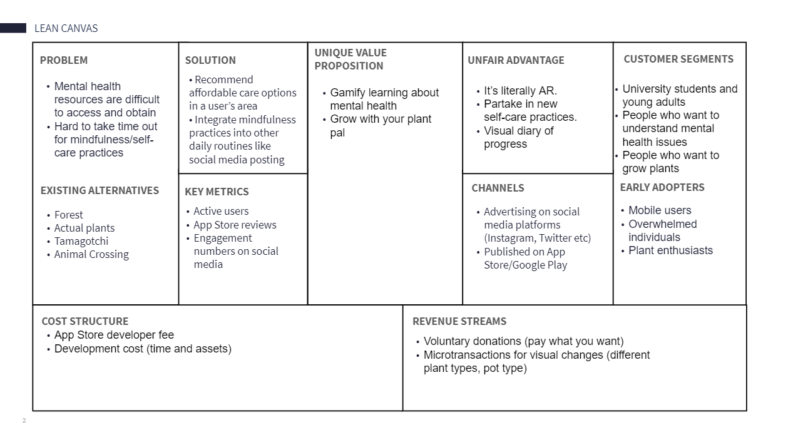

<html lang="en"></html>
<head>
    <meta charset="utf-8">

    <title>Online Portfolio</title>
    <meta name="viewport" content="width=device-width, initial-scale=1.0">
    
    
    <!--Custom Style Sheet-->
    <link rel="stylesheet" href="bootstrap-4.5.0-dist/css/bootstrap.min.css">
    <link rel="stylesheet" href="experiment-3.css">
    <!--Custom Icon-->
    <link rel="icon" href="assets/logo_AAW_icon.ico">
    <!--Custom Text-->
    <link href="https://fonts.googleapis.com/css2?family=Ubuntu:wght@300;400;500;700&display=swap" rel="stylesheet">
    <!--Animate.css-->
    <link
    rel="stylesheet"
    href="https://cdnjs.cloudflare.com/ajax/libs/animate.css/4.0.0/animate.min.css"
  />
    <!--Font Awesome Icons-->
    <link rel="stylesheet" href="fontawesome-free-5.13.0-web/css/all.min.css">
    <!--jQuery and Bootstrap-->
    <script
    src="https://code.jquery.com/jquery-3.5.1.min.js"
    integrity="sha256-9/aliU8dGd2tb6OSsuzixeV4y/faTqgFtohetphbbj0="
    crossorigin="anonymous"></script>
    <script src="bootstrap-4.5.0-dist/js/bootstrap.min.js"></script>
    
    <!--Custom JavaScript-->
    <script src="experiment-3.js"></script>
</head>
<body id="background-color">
  <div class="bg-pastel-red spaces-in-between">
    
  </div>
  <div class="container-fluid">
    <div class="row">
      <div class="col-md-3"></div>
      <div class="col-md-6 animate__animated animate__fadeInUp">
        <!-- Background information -->
        <div class="smaller-space-in-between">
          <h1 class="red-title name-head">Background</h1>
          <p class="date-text">January 2020 - March 2020</p>
          <p class="write-up-text">
            Planty is a mental health mobile application that aims to improve users' emotional wellbeing by
            fostering a sense of ownership and accountability, something that we found many of our users lacked. 
            Originally for my class curriculum, my team and I were tasked to design an app that would tackle mental health using AR technology.
          </p>
          <p class="write-up-text">
            I worked in a team of six as the user researcher for eight weeks for this class project. 
            We designed this app using Lean UX methodologies, which is a solution-based approach. 
          </p>
        </div>
        <!-- Proposal -->
        <div class="smaller-space-in-between">
          <h1 class="red-title name-head">Proposal</h1>
          <p class="date-text">Lean Canvas</p>
          <p class="write-up-text">
            A lean canvas focuses on problems, solutions, key metrics, competitive advantages, customer segments, early adopters,
            cost structure, and revenue stream. We created our chart by basing our early adopters around stressed, young college students 
            who frequently use their smartphones. The main problem we attempted to tackle was the difficulty our early adopters had 
            in finding time to practice self-care. 
          </p>
          <p class="write-up-text">
            Our solution is to design and develop a mobile application that would integrate itself into our users' daily schedules.
            Something that would set the app apart would be its augmented reality (AR) capabilities. The main cost we pinpointed
            is development fees, but ideally we would be able to make it back through donations and in-app cosmetic purchases.
          </p>
          
          <p class="date-text">Value Proposition</p>
          <p class="write-up-text">
            Value propositions communicate to customers what value is being delivered and how it will be given.
            We list out our customers' supposed needs and how our product may solve it.
          </p>
          <p class="write-up-text">
            Our main goals are to teach users self-care techniques and to make them a habit in their lives.
            Based on these goals, we would create an AR diary in the form of a virtual plant that must be taken care of.
            Users can take pride and ownership by sharing their plants on social media, similar to Pokemon Go. 
            In order to foster an affordable and comfortable experience, our app would send positive reinforcement and would be
            completely free.
          </p>
          <p class="date-text">Minimum Value Plan (MVP)</p>
          
          <p class="write-up-text">
            
            To help users build healthy, mindful habits, our product will solve our users’ inability to maintain accountability over their mental health. For young adults who suffer from stress in their lives, we will deliver a mobile application that allows users to log self-care activities and reminds users to practice self-care within a year.
  
            We’ll know this when we see half of our user base report back that they’ve successfully changed a habit.
  
            </p>
        </div>
        <!-- User Research -->
        <div class="smaller-space-in-between">
          <h1 class="red-title name-head">Research</h1>
          <p class="date-text">Competitors</p>
          <p class="write-up-text">
            To gain inspiration and find our place in the market, we took to searching up direct and indirect competitors across the internet.
            We found that single-player games focusing on individual progression, without limitations such as time, were frequently used as a form 
            of escapism, such as the Animal Crossing series. Many players cited that forming relationships with characters in the game 
            and the ability to customize their city/island beneficial to their mental health.  
          </p>
          <p class="write-up-text">
            We also took notice of mobile apps such as Forest. Forest is a productivity app that uses the trees to keep their users engaged in their task.
            By using a Pomodoro-like technique, users can either allow their trees to flourish or die. As some of the team members were users of the app themselves,
            we enjoyed the sense of accountability and accomplishment Forest offered.
          </p>
          <p class="date-text">Interviewing Users</p>
          <p class="write-up-text">
            Because this was a user-centered design process, we needed to include users in our development phase as well. 
            Thus, we sought around ten potential users to talk to them about their values around self-care. 
            We documented qualitative data about what users considered self-care, how frequent they practice self-care, how they felt, and what type of self-care activities they do. 
          </p>
          <p class="write-up-text">
            We asked them the following questions:
          </p>
          <ol class="write-up-text">
            <li>How often do you practice self-care?</li>
            <ol type="i">
              <li>Self-care is defined as an activity that improves the interviewee's mental health/mood/self-esteem.</li>
            </ol>
            <li>What are some self-care activities you do?</li>
            <ol type="i">
              <li>Ask them to list it out.</li>
            </ol>
            <li>Do you find yourself struggling to maintain a consistent self-care schedule?</li>
            <ol type="i">
              <li>If yes, ask why.</li>
              <li>If no, ask how they keep themselves accountable.</li>
            </ol>
            <li>Will this app help you maintain a consistent self-care schedule?</li>
            <ol type="i">
              <li>If no, ask them why it wouldn't help.</li>
            </ol>
            <li>On a scale from 1 to 5 with 5 being the hardest, how difficult was it to use the app?</li>
            <ol type="i">
              <li>What aspects did you struggle with the most?</li>
            </ol>
            <li>What features or functionality did you enjoy the most?</li>
            <li>Would you use this app daily without alerts?</li>
          </ol>
          <p class="date-text">Results and Analysis</p>
          <p class="write-up-text">As our data is qualitative, we had to read through our users’ answers and highlight the key takeaways from each interview. We tried our best to record our user’s answers word-for-word, and we repeated their answers back at the very end to confirm their validity.</p>
          <p class="write-up-text">Many of our users claimed that they don’t track self-care in terms of time. For some, it is incredibly difficult to consistently set aside time and integrate self-care into their schedules. Others claimed that self-care couldn’t be quantified by time. They’d rather have other measures such as amount of chapters read from their favorite book or how many episodes they watched of a show from Netflix. As a result, we included features that allows users to quantify their activities (i.e. 5 chapters of reading) instead of having time as the sole measure of self-care. Additionally, users claimed that recording their self-care sessions was a hassle. They were unwilling to incorporate a habit-tracker application into their lives, claiming “it takes too much time”. We took those comments into consideration and integrated a one-click user flow, where users skip having to set an end condition and use a default.</p>
          <p class="write-up-text">Our questions also had them list out their preferred self-care activities, which helped us categorize the activities for our app design. It also gave us an insight on the frequency they practice self-care. The range our users would practice one activity would range from a few minutes to a couple hours at most. This helped us refine our timer range to have hours and minutes. 
          </p>
          
        </div>
        <div class="smaller-space-in-between">
          <h1 class="red-title name-head">Low-Fidelity Prototype</h1>
          <p class="date-text">Initial Sketches</p>
          <p class="write-up-text">After analyzing our data, we moved onto creating user flows through sketches.
            In our first sketch, we started the user flow of logging in an activity. 
            The second sketch begins with the download and explanation of actions taken by the user.
          </p>
          <div class="row">
            <div class="col-sm">
               
            </div>
            <div class="col-sm">
              
            </div>
          </div>
          
        </div>
      </div>
    </div>
  </div>
</body>